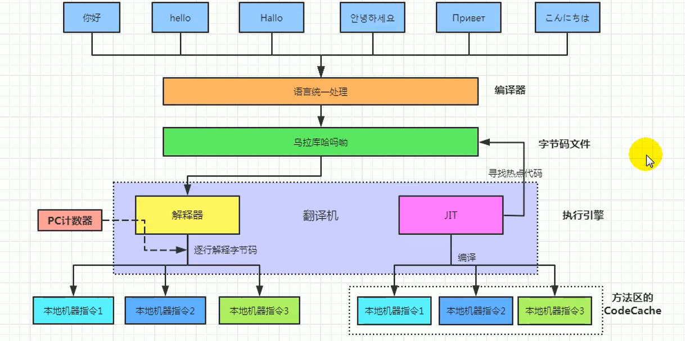

JVM-12_执行引擎文章发布时间: 2022-08-24最后更新时间: 2023-03-26执行引擎属于JVM的下层，里面包括 解释器、及时编译器、垃圾回收器 Java代码编译和执行过程大部分的程序代码转换成物理机的目标代码或虚拟机能执行的指令集之前，都需要经过上图中的各个步骤 前面橙色部分是生成字节码文件的过程，和JVM无关 后面蓝色和绿色才是JVM需要考虑的过程 Java代码编译是由Java源码编译器来完成，流程图如下所示： Java字节码的执行是由JVM执行引擎来完成，流程图 如下所示 我们用一个总的图，来说说 解释器和编译器  ∧≡